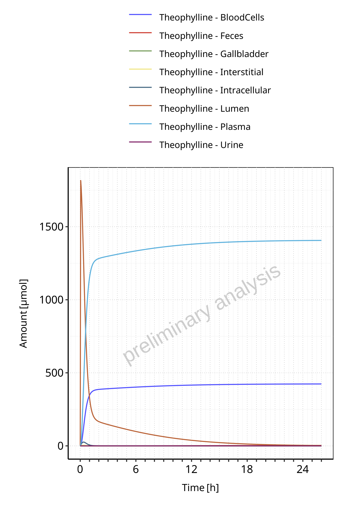
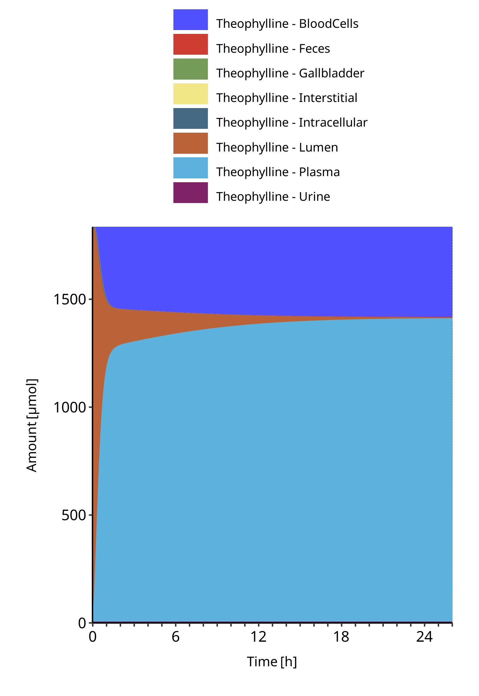
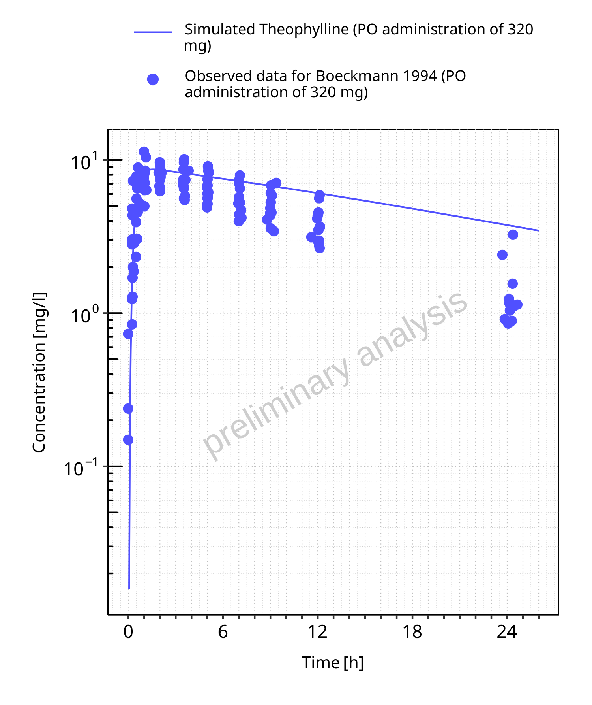
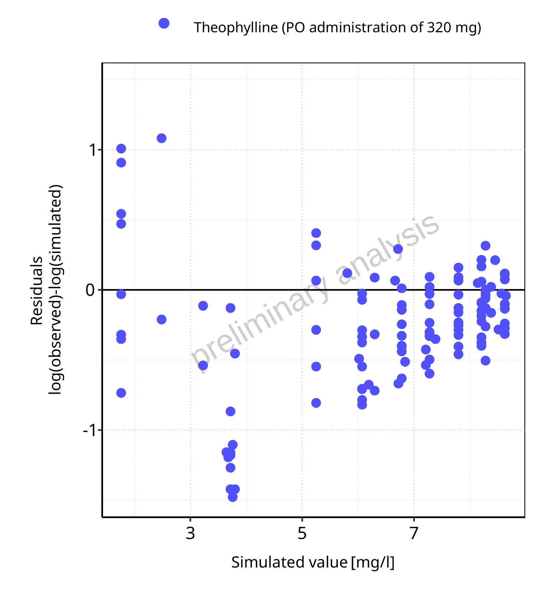
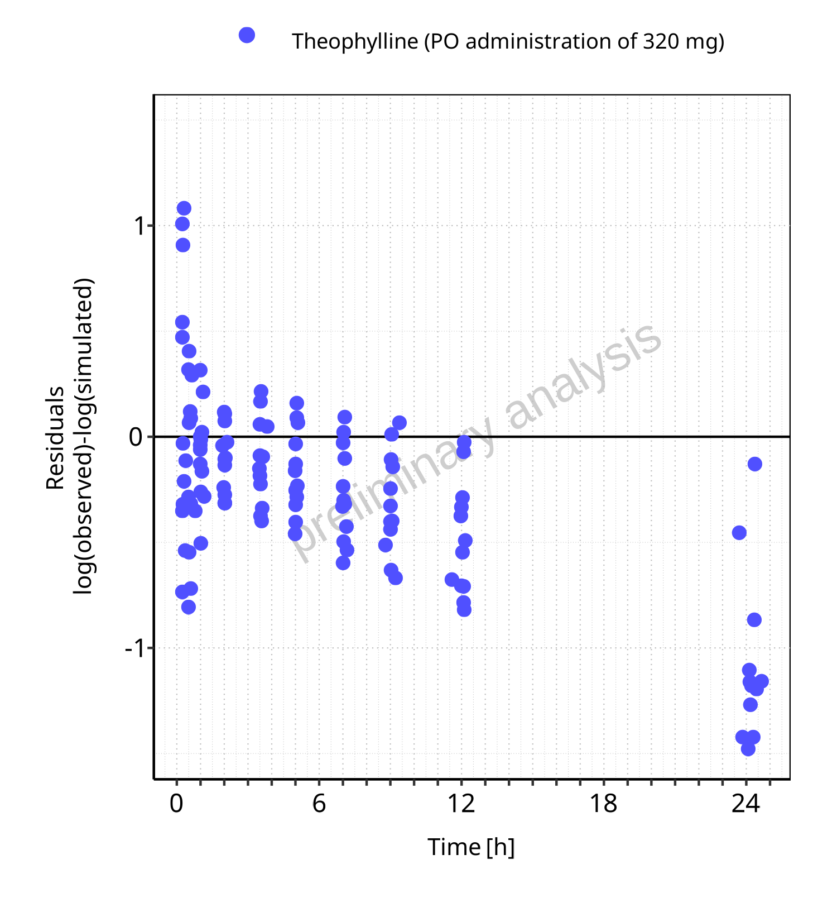

Test-NO12.RmdTable of Contents
3 Mass Balance
3.1 Mass Balance for PO administration of 320 mg
3.1.1 Mass Balance for Theophylline

Figure 3-1: Amount of drug vs time within the different compartments for Theophylline

Figure 3-2: Cumulated amount of drug vs time within the different compartments for Theophylline

Figure 3-3: Amount of drug vs time within the different compartments normalized to applicated drugmass for Theophylline

Figure 3-4: Cumulated amount of drug vs time within the different compartments normalized to applicated drugmass for Theophylline
Figure 3-5: Fraction of drug within the different compartments at 26.00h for Theophylline
4 Time profiles and residual plots
4.1 Time profiles and residual plots for PO administration of 320 mg
Figure 4-1: Time profiles for PO administration of 320 mg. Data source: Boeckmann 1994. Time profiles are plotted in a linear scale.

Figure 4-2: Time profiles for PO administration of 320 mg. Data source: Boeckmann 1994. Time profiles are plotted in a logarithmic scale.
Figure 4-3: Predicted vs observed for PO administration of 320 mg. Data source: Boeckmann 1994. Predictions and observations are plotted in a linear scale.

Figure 4-4: Predicted vs observed for PO administration of 320 mg. Data source: Boeckmann 1994. Predictions and observations are plotted in a logarithmic scale.

Figure 4-5: Logarithmic residuals vs predicted values for PO administration of 320 mg. Data source: Boeckmann 1994.

Figure 4-6: Logarithmic residuals vs time values for PO administration of 320 mg. Data source: Boeckmann 1994.

Figure 4-7: Logarithmic residuals distribution (stacked) for PO administration of 320 mg. Data source: Boeckmann 1994.

Figure 4-8: Logarithmic residuals for PO administration of 320 mg as quantile-quantile plot. Data source: Boeckmann 1994.